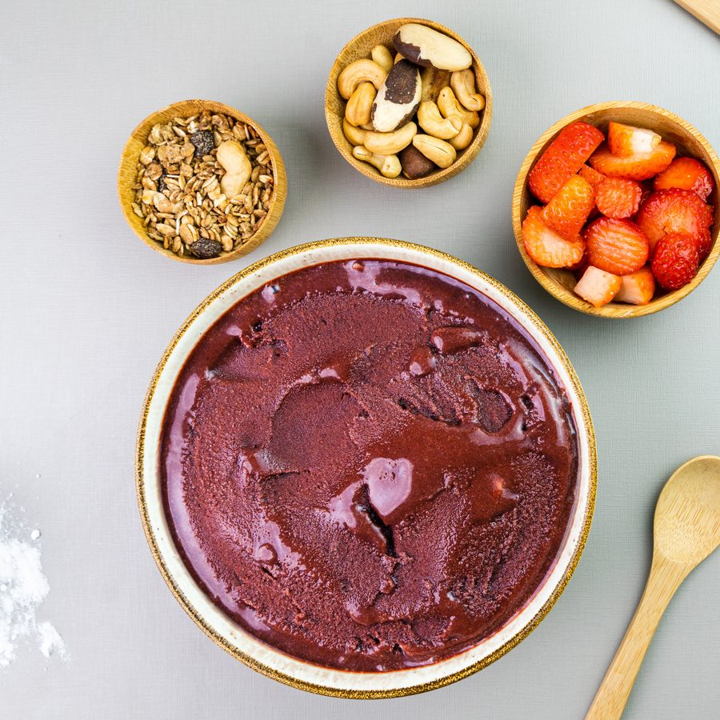
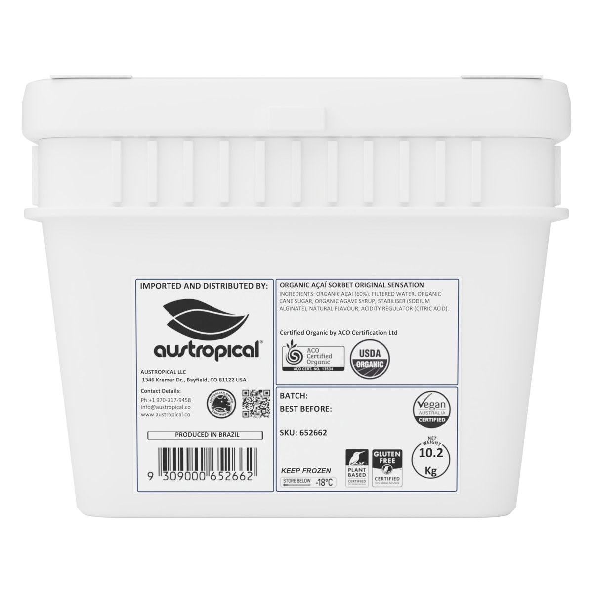
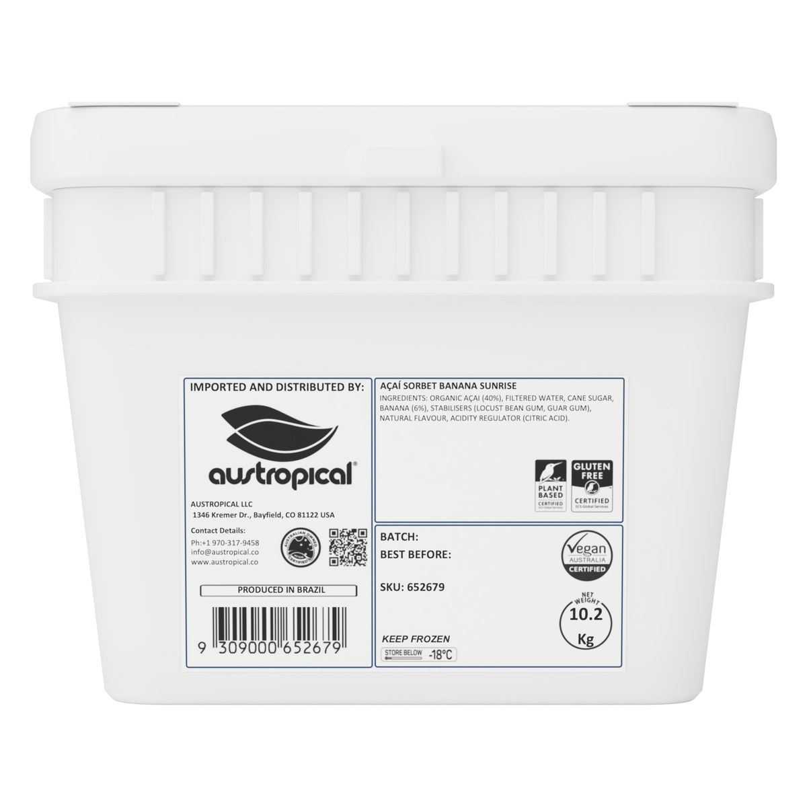
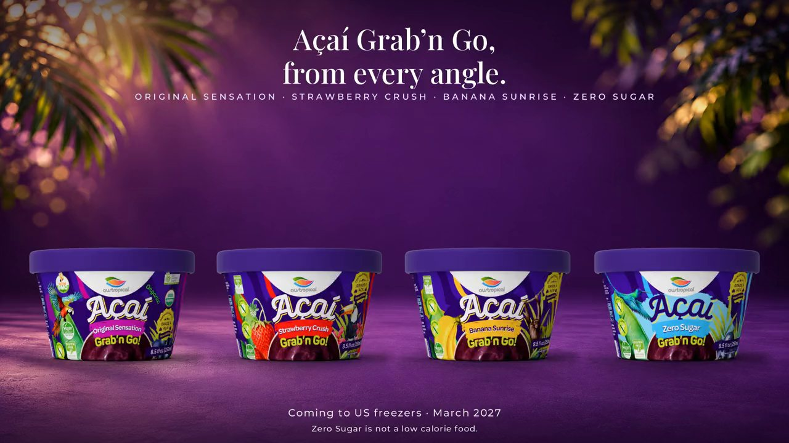

Foodservice · Set up at Vistar
The açaí bowl program: bulk açaí sorbet in 10.2 kg buckets
No blender, no mix, no machine to calibrate: a scoop, a freezer, and a topping bar your customers set the value on. Ten flavors, one spec, in a 10.2 kg bucket.
- 2/3 cup147 g scoop
- About 69bowls a bucket, before toppings
- No blenderscoop, top, serve
- Vistaritems TLL65266 to TLL65275

How it works
Scoop, top, serve
- 1
Scoop
One 2/3 cup (147 g) scoop of sorbet from the bucket into the bowl cup. The bucket lives in the freezer at 0 °F (−18 °C) or below.
- 2
Top
The topping bar you already stock: granola, banana, strawberry, coconut. Your customers set the value.
- 3
Serve
Hand it over. No blender, no mix, nothing to calibrate, and any student worker can run it after a 15-minute training sheet.


Who it is for
Four places the program fits
Same bucket, same scoop, same ten flavors. What changes is where the counter sits and what travels with it.
Campus dining
A bowl counter in the dining hall or the student union, run by student workers after a 15-minute training sheet; Grab'n Go cups in the campus c-stores and micro-markets on the same Vistar delivery.
Start hereC-stores and micro-markets
The 250 mL Grab'n Go cup with its wooden spoon in the grab-and-go freezer, 18 a case; single-serve, no prep.
Start hereCafés and scoop shops
Bowls from the bucket at the counter and pints in the freezer door, with the toppings bar you already stock.
Start hereHotels, resorts and clubs
A cart or a 4-foot build-out inside an existing café or lounge; the operator keeps the menu and sets the price.
Start here
The Operator Kit
What's in the kit
- 10.2 kg buckets through Vistar, a 2/3 cup scoop, about 69 bowls a bucket.
- The toppings bar you already stock: granola, banana, strawberry, coconut.
- Printed Austropical bowl cups and spoons.
- Menu board, counter signage and window clings.
- A 15-minute staff training sheet.
- A counter or cart: a 4-foot build-out inside an existing café, or a cart.
The Austropical Açaí Bar is a branded counter or cart inside your existing dining or retail space. You run it and you own the menu; buckets and Grab'n Go cups come through Vistar on the same delivery.




The menu
The four-bowl menu
One size: a 2/3 cup scoop plus the toppings on the bar. Split-flavor bowls, two sorbets in one cup. You own the menu, and all ten flavors come in the same bucket.


Grab'n Go
The 250 mL cup for coolers, c-stores and micro-markets
One serving with a wooden spoon under the lid. Grab'n Go cups sit in the same campus c-stores, grab-and-go coolers and micro-markets, on the same Vistar delivery as the buckets. Eighteen cups to a case.
Formats and case packs
Spec
The 10.2 kg bucket
Bucket
- White square pail, snap lid, one printed label on the front face.
- Net 10.2 kg (22.49 lb); gross 10.8 kg (23.53 lb).
- 24.5 × 29.5 × 24.8 cm (9.65 × 11.61 × 9.76 in).
- Portion: 2/3 cup (147 g); about 69 servings per bucket.
- Sold by the bucket, not cased.
Pallet
- 120 buckets per pallet: 15 per layer, 8 layers.
- 1200 × 1000 mm pallet, loaded height 212.9 cm (83.82 in), stretch-wrapped.
- Shelf life: 24 months from manufacture, sealed and stored frozen.
- Keep frozen at 0 °F (−18 °C) or below.
Ten buckets at Vistar
Vistar, a Performance Food Group company. Austropical supplier number 101808. Product data for all 60 Austropical items is published through GDSN (Syndigo).
| Flavor | Vistar item | Bucket GTIN |
|---|---|---|
| Organic Açaí Original Sensation | TLL65266 | 09309000652662 |
| Açaí Banana Sunrise | TLL65267 | 09309000652679 |
| Açaí Strawberry Crush | TLL65268 | 09309000652686 |
| Açaí Zero Sugar (Not a low calorie food.) | TLL65269 | 09309000652693 |
| Organic Coconut | TLL65270 | 09309000652709 |
| Organic Mango | TLL65271 | 09309000652716 |
| Passionfruit | TLL65272 | 09309000652723 |
| Dragon Fruit & Pineapple | TLL65273 | 09309000652730 |
| Pink Guava & Acerola | TLL65274 | 09309000652747 |
| Cupuaçu & Coconut | TLL65275 | 09309000652754 |
Samples and a spec sheet
Tell us your operation and location. We send samples and the bucket spec sheet, and walk you through the Operator Kit.
Request samples and a spec sheetBuyers and distributors
Case packs, GTINs, pallet configuration, certifications and storage for all three formats.
Trade information